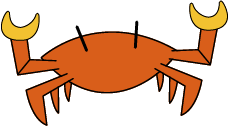

Een croissant is misschien wel een van de beste koffiekoeken; het biedt zoveel verschillende mogelijkheden, zowel zout als zoet.

Op vakantie zoek ik liefst de zee en het strand op. Een van de interessantste dieren die je daar tegenkomt, is de krab: klein, snel en opvallend robuust.

Een van mijn interesses is kunst en architectuur. Mijn favoriete architectuurstijl is het brutalisme; mijn favoriete kunststroming is De Stijl. In mijn werk vermeng ik deze twee in een persoonlijke interpretatie.

Surfen is mijn favoriete hobby. Jammer genoeg woon ik niet aan zee, maar elke kans om te surfen, grijp ik met beide handen.
De Griekse oudheid is een van de meest fascinerende periodes uit de geschiedenis. Vooral de Spartanen spreken tot de verbeelding, met hun discipline en kracht.